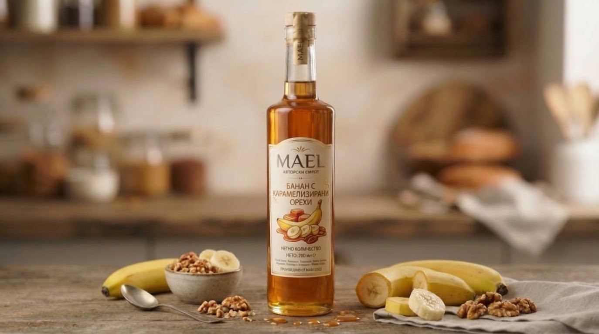

Авторски Сироп
Банан с
карамелизирани орехи
Този неустоим сироп улавя вкуса на нежен банан, обвит в богат, топящ се карамел и хрупкави орехи. Сладките плодови нотки преливат в дълбок, ядков послевкус, който създава истинско гурме усещане. Преобразете сутрешното си лате, палачинките или млечните шейкове в истински кулинарен шедьовър.
10.00 €
Бутилка от 700 мл.
- Състав: Захар, вода, естествени аромати, морска сол.
- Подходящ за: Кафе, мляко, сладолед, палачинки, коктейли.
- Доставка: Бърза доставка до 24 часа.